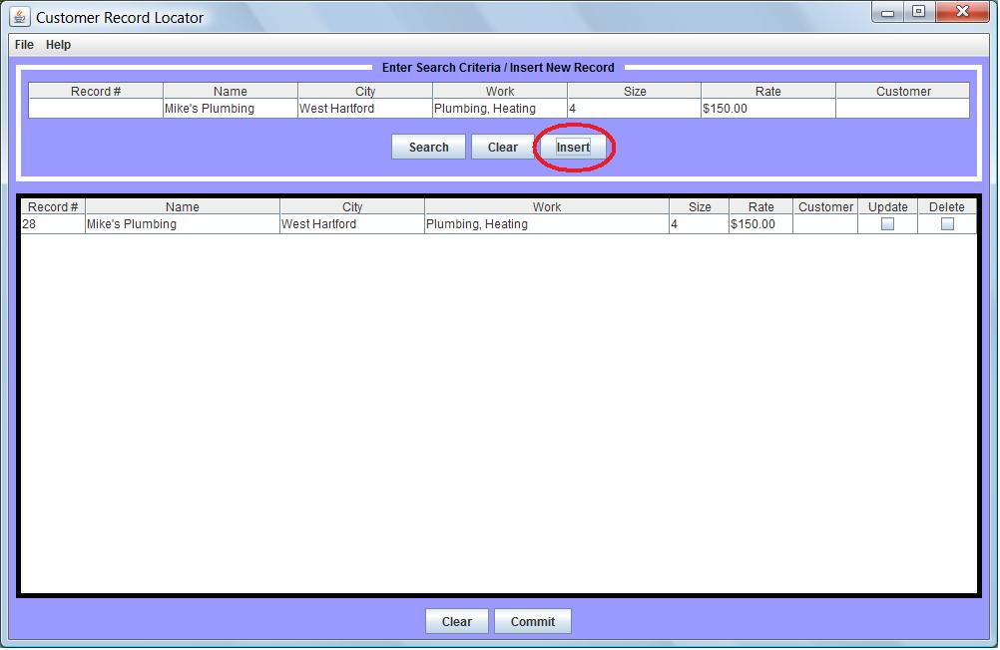
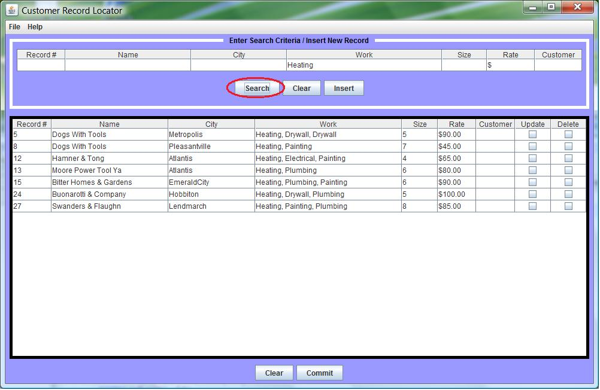
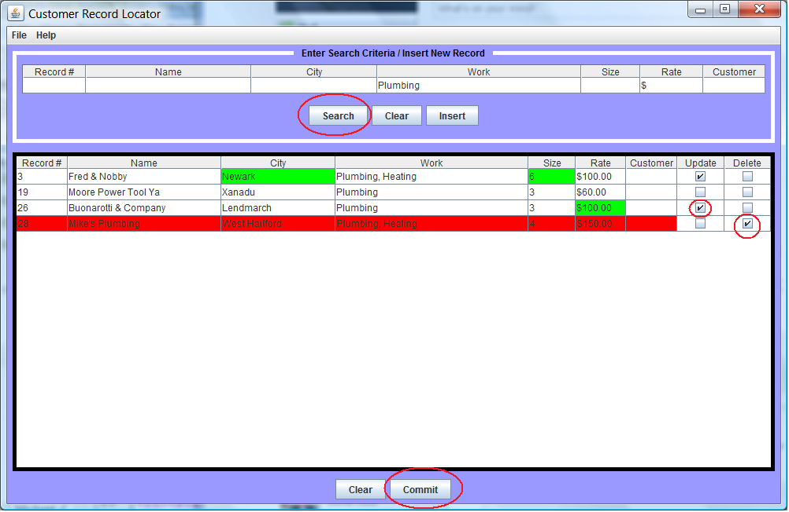
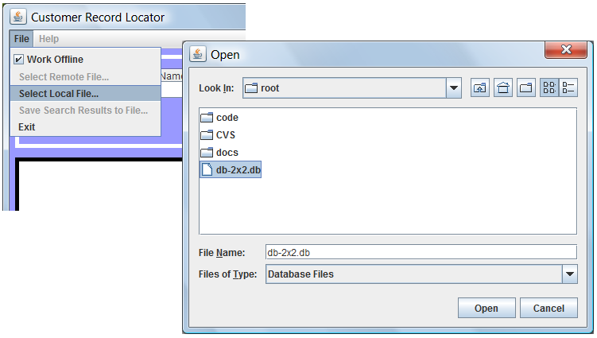
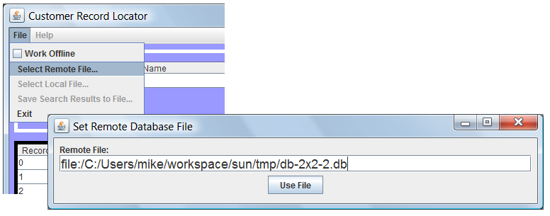
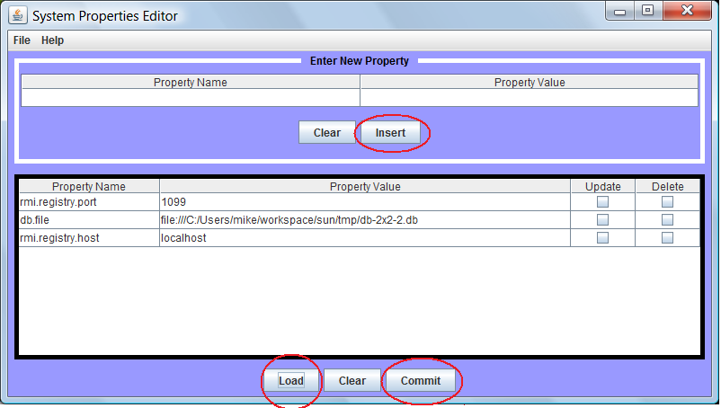

CRL is pronounced 'curl' and stands for Customer Record Locator.
For a quick overview you may read the Quick Pointers in each
section defined in the Table of Contents.
Table of Contents
- Property Editor Tool
- Insert New Record
- Search for Records
- Update and Delete Records
- Modes of Operation
- Field Definitions
- Server Documentation & Start-up Options
The User Interface is divided up into 2 main tables. A field entry table at the top used to insert new records
into the database or used to search for existing records matching criteria entered
into any of it's cells. The field entry table is surrounded by a white border.
The display table at the bottom is used to display the results of a database
query or insert and perform row updates and deletes on existing records. The display table
is surrounded by a black border.

Fig.1.1 The Entry Table is where you search for records or insert a new record.
In Fig 1.1 shown above a user has entered all the fields shown in the entry table and hit the Insert button.
The new record is inserted into the database and displayed in the display table. A unique record number is
assigned automatically by the database and not the user. New record inserts will ignore any record number
entered by the user in the
Record # field of the entry table. Pressing
the Clear button will clear all fields in the entry table.
Insert Quick Pointers
- Record # cell is ignored on Insert.
- Only the Record # and Customer cells may be left blank when inserting (as shown above).
- When inserting a new record list the specialities in order with the greatest specialization
first under the
Work column. Multiple specialties are comma separated. The first value
in the Work column is considered the primary specialty.
The entry table may also be used to search for existing records. Two types of searches are supported.
A record number may be entered in the Record # cell. When the Search button is pressed the
record matching the record number entered will be returned and displayed in the display table. Alternatively
text may be entered into any field and all records whose columns begin with the entered text will
be returned. A record number will override any other entered search criteria so at most 1 record will
be returned if a record number is entered in the Record # cell. Blanks are considered
wild-cards so partial strings may be entered in any of the column indexes of the entry table. Columns in
the database that begin with those strings will be returned. Entering no data at all will return all
records contained in the database. Results from multiple searches append to the display table if the row does not
already exist.

Fig.1.2 The Entry Table showing a search for "Heating" under Work Performed.
In Fig 1.2 shown above a user has entered the string "Heating" in the
Work column.
All the rows whose Work column begins with "Heating" have been returned and displayed in the display table.
Search Quick Pointers
- Record # cell overrides all other criteria on Search.
- Pressing Search with no criteria will return all rows.
- Entering text will return rows matching text in corresponding column.
- Entering text in multiple cells will return rows matching text in each corresponding column.
- Matching is unlike grep in that database columns must begin with the entered text.
- Matching is not case sensitive.
Modifications and deletions are performed in the display table. Two checkboxes in the right-most
columns are used to indicate which operation is being performed on a given row. Check 'Update' to
modify cells for update. Check 'Delete' to mark a row for deletion. Rows marked for delete are
highlighted in red. Cells that have been modified are highlighted in green if the data differs
from the value in the database. De-selecting 'Update' before committing will restore the
original values in the display table and no update action will occur for cells that have been
reverted. Pressing 'Commit' will commit all changes to the underlying database.

Fig.1.3 The display table showing 3 cells that have been updated and 1 row
marked for deletion.
In Fig 1.3 shown above the user has searched for all records where the primary work performed is 'Plumbing'.
The records are retrieved from the database and displayed in the display table. The user has modified 3 fields.
The company location and size have been modified for record #3. The company rate has been modified for
record #26 and record #28 is selected for deletion. When the user hits the 'Commit' button the changes
will be persisted in the database, the search will be performed again, and the new results will be
displayed showing the changes. Once the 'Commit' button has been pressed the changes can not
be reverted.
Update and Delete Quick Pointers
- Search must precede any update or delete.
- Only way to modify cells in the display table is to check 'Update'.
- Unchecking 'Update' will revert all uncommitted changes.
- Press 'Commit' to commit all changes.
- Press 'Clear' to clear the display table.
Two types of run modes are supported. Online (Network client mode) and Offline (Stand-alone mode).
Online mode is the normal
operation mode and signifies the database is running on a remote computer with several clients connected to it
via a network connection to a common database server.
Offline mode implies that the user is accessing a local database file on the users own P.C. or workstation.
Offline mode implies that each user running in Offline mode has their own private copy of the database
and they will not see each others changes.
Sharing of a common database file across multiple users running in Offline mode or between
users running in Offline mode and users in Online mode is not
supported. Care must be taken to ensure that users running in Offline mode can not access a shared database
file from a networked file system when choosing a file in Offline mode. Switching between modes of
operation will force a network connection to open or close depending on the selected run mode.

Fig.1.4 Working offline and choosing a local database file.
In Fig 1.4 shown above a user has chosen to work offline and is selecting a local database file from a pop-up file chooser.

Fig.1.5 Selecting a remote file when working online (network client mode).
In Fig 1.5 shown above a user is working online and is specifying a new remote database file.
Run Mode Quick Pointers
- Never choose a networked file when working in Offline mode.
Field Definitions
- Record #: Numeric record number (no insertion or modification).
- Name: 32 char alphanumeric subcontractor name.
- City: 64 char alphanumeric location.
- Work: 64 char alphanumeric types of work performed (specialties).
- Size: 6 char numeric staff size.
- Rate: 8 char numeric hourly rate. '$' must be first. Decimal point '.' allowed.
- Customer: 8 char numeric customer who has booked this contractor.
System Administrative Users may add, update, or delete system properties using the Property Editor Tool (PET).
PET can not be launched from CRL. To launch PET execute the following command from the directory containing runme.jar:
java -cp runme.jar
suncertify.props.PropConfigLauncher

Fig.1.6 The Property Editor Tool (PET) after pressing 'Load'.
In Fig 1.6 shown above an Admin user has pressed the 'Load' button to display the system properties. The tool
is modeled after CRL and is used in exactly the same way. Please read through the CRL documentation for an overview of
the layout and how to select properties for modification and deletion prior to committing the changes.
The three main functions are circled in red. Loading properties and committing changes is done from the display table as
is done in CRL. Inserting new properties is done from the entry table surrounded by a white border in the upper half of
the user interface.
Property Editor Quick Pointers
- Load properties from the property file by pressing 'Load'.
- Insert new properties from the upper half of the GUI (entry table) then press 'Insert'.
- Select properties for edit or delete using the checkboxes.
- Commit changes to the properties file by pressing 'Commit'
The two modes of operation are described above. See Modes of Operation.
Offline mode is performed entirely inside 1 single JVM instance. Online mode requires two JVM instances.
The commands to start the JMVs in these modes are shown below:
To run CRL in ONLINE Mode (Client & Server)
- On the network server host from the directory which includes the jar file run: java -jar runme.jar server
- On the network client host from the directory which includes the jar file run: java -jar runme.jar
To run CRL in OFFLINE Mode (Stand-alone)
- On the client host from the directory which includes the jar file run: java -jar runme.jar alone
System properties are stored in the same directory as runme.jar in a file called
suncertify.properties and contain the following property names and descriptions.
- rmi.registry.port: The port that the network and client programs communicate on.
- rmi.registry.host: The host name that the network server runs on.
- db.file: The location of the database file on the network server host in ONLINE mode or
the location of the file on the client host when running in OFFLINE mode.
Manual editing of suncertify.properties is strongly discouraged. System properties may be added, modified,
or deleted using the Property Editor Tool.